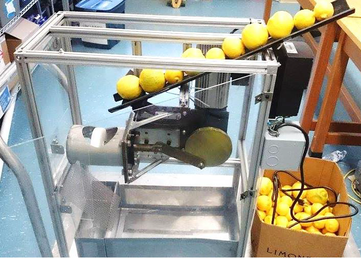

UCSB, summer semester 2015
Group of 5
Industry project, where my main contribution to the project was mechanical design of piston mechanism, and juice and waste separator sytem.
Duration 2 semesters
Lemon juicer prototype made for the lemon producer company Limonaira. The goal was to make a table top lemon juicer for restaurants and take away food shops to make fresh lemonade. Even though there are many existing orange juicers there are currently no available lemon juicers on the marked. The orange juicer machines are not suitable for lemons because of the shape of the lemons. The result of the project was a proof of concept of the squeezing mechanism to get the most out of the lemons, along with aroma from the peel which gives the great taste to the lemonade. The collecting system separates the juice from the waste, with less than one present waste of juice in the waste bin.
